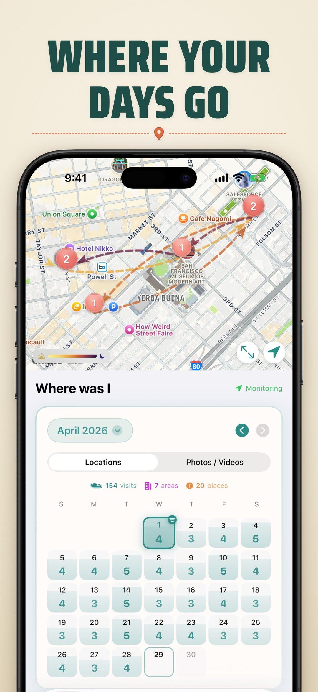
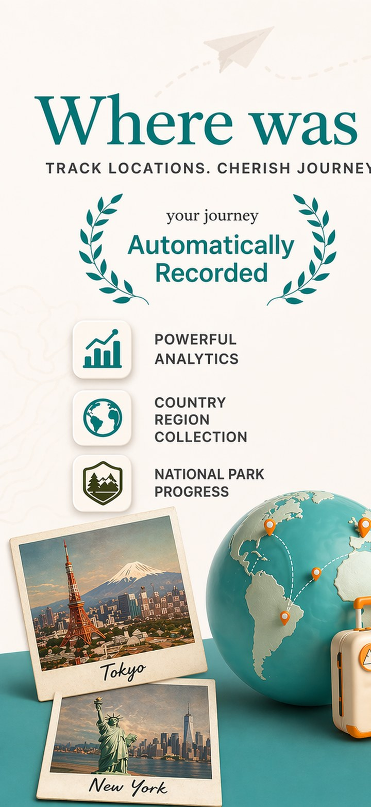
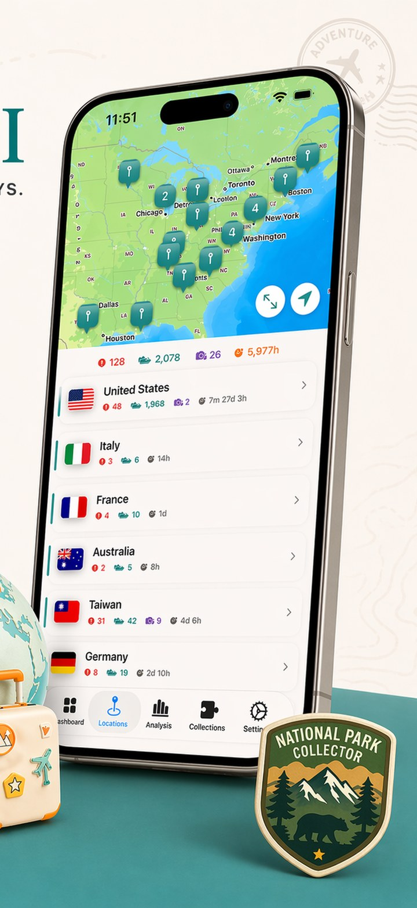
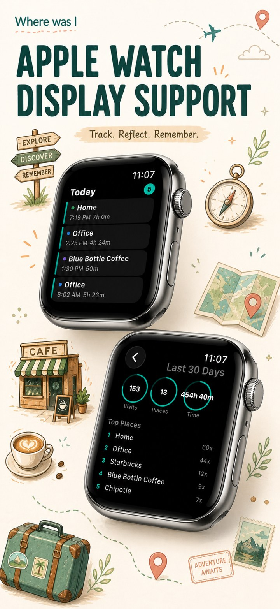
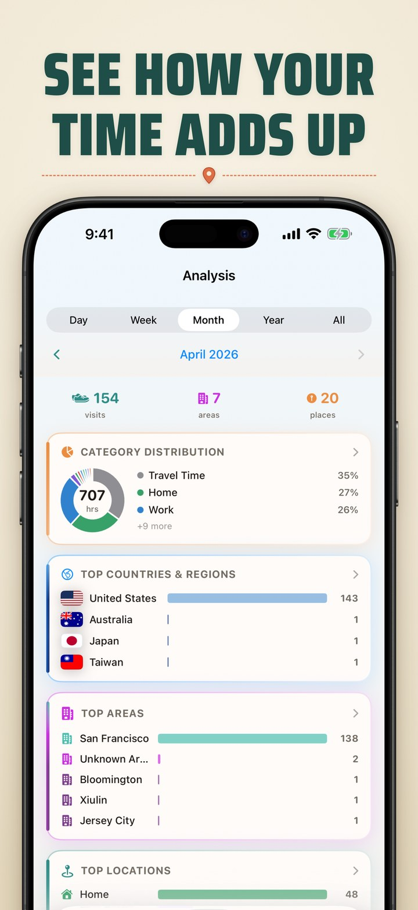
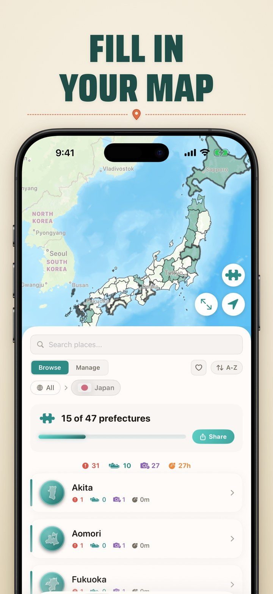
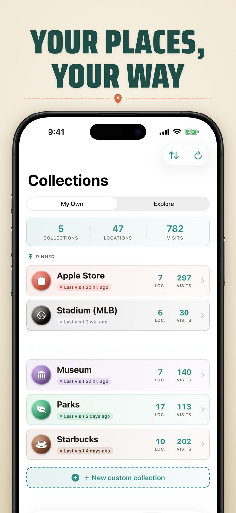
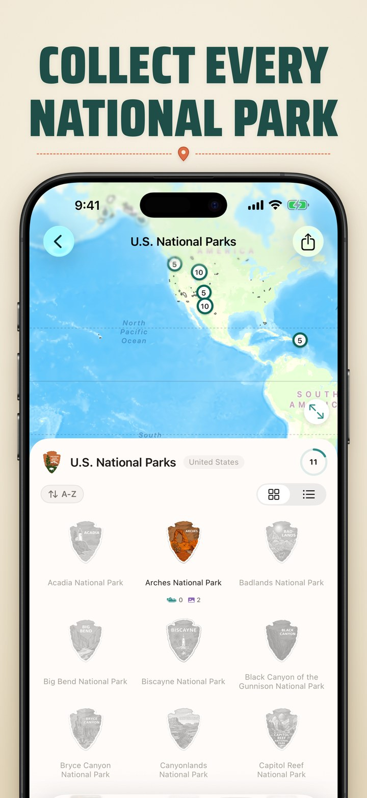
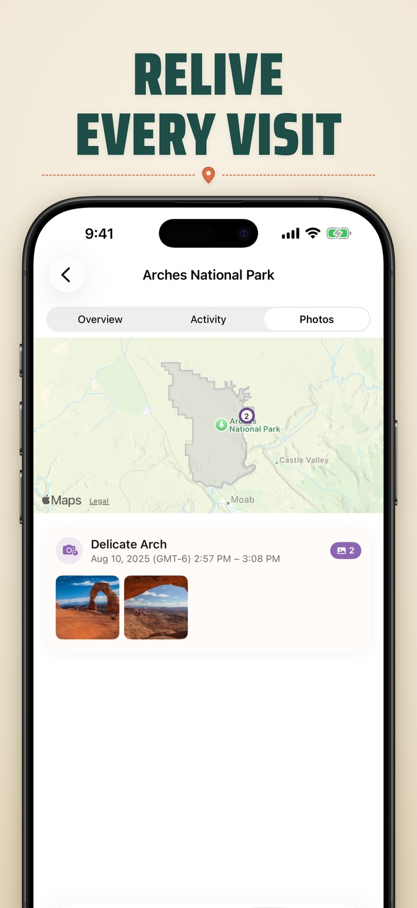

Lembre de cada lugar que você visitou
Where was I ? lembra automaticamente de cada lugar aonde você vai — e o transforma em uma linha do tempo, calendário e mapa privados. Descubra seus padrões, colecione Parques Nacionais e Castelos Japoneses e dê uma olhada no seu dia diretamente do seu Apple Watch ou Tela de Início. Tudo no seu dispositivo, sem conta necessária.

Recursos poderosos
Tudo o que você precisa para lembrar e explorar seu histórico de localização
Sua vida em linha do tempo
Role por um histórico lindamente organizado de todos os lugares que você visitou. Veja suas visitas por dia, semana ou mês—sua história de vida se desenrola automaticamente.
Descubra seus padrões
Obtenha insights sobre sua vida diária. Veja seus lugares mais visitados, o tempo gasto em cada localização e como suas rotinas evoluem ao longo do tempo.
Seu mundo de relance
Veja todas as suas visitas em um mapa interativo. Diminua o zoom para ver todos os lugares aonde a vida te levou, ou aumente para explorar um único bairro.
Seus dados, seu dispositivo
Todos os dados de localização permanecem seguros no seu iPhone e no seu iCloud pessoal. Nada é enviado para servidores externos. Sua jornada permanece só sua.
No seu pulso
Confira as visitas de hoje, os resumos da semana e do mês e seus lugares principais diretamente do Apple Watch — além de uma complicação do Smart Stack que mantém sua última parada a um olhar de distância.
Widgets da Tela de Início e de Bloqueio
Veja as visitas recentes, um cronômetro de permanência ao vivo para onde você está agora e a contagem de visitas de hoje sem abrir o app. Toque em qualquer widget para entrar direto.
Visualização de calendário
Navegue pelas suas visitas por dia, semana ou mês. O calendário mostra a contagem de visitas e os lugares únicos de relance, para você revisitar qualquer dia em segundos.
Coleções e marcos
Transforme suas viagens em coleções — acompanhe os U.S. National Parks, os 100 Famous Japanese Castles, países e regiões, ou crie coleções personalizadas que se preenchem automaticamente conforme você anda.
Adicione, edite e divida visitas
Preencha uma parada que o app não detectou, ajuste os horários de chegada e saída, ou divida uma visita em duas — seu histórico permanece preciso e completo.
Leve seu histórico com você
Importe seu Google Maps Timeline, além dos dados do Moves e do Arc Timeline, para que anos de lugares venham junto na viagem.
Check-ins por foto
Transforme as fotos que você tira em visitas. O Where was I ? lê onde cada foto foi tirada para preencher os lugares aonde você foi — alimentando o desbloqueio de quebra-cabeças e a descoberta de coleções. Suas fotos nunca são enviadas nem alteradas.
Veja em ação
Design bonito encontra funcionalidade poderosa








Comece a lembrar hoje
Download gratuito. Seu diário de localização começa no momento em que você instala. Sem conta necessária—apenas você, seu iPhone e os lugares que você visita.
Perguntas frequentes
Tudo o que você precisa saber sobre o WhereWasI
Sim. O Where was I ? inclui um app completo para Apple Watch — visitas de hoje, resumos da semana e do mês e seus lugares principais — além de uma complicação do Smart Stack. No iPhone, você também recebe widgets da Tela de Início e da Tela de Bloqueio mostrando visitas recentes, um cronômetro de permanência ao vivo, a contagem de visitas de hoje e sua localização atual.
Sim. Você pode importar a exportação do seu Google Maps Timeline, bem como os dados do Moves e do Arc Timeline — basta abrir a tela de importação e adicionar seu arquivo. Seus lugares anteriores são associados a locais automaticamente.
As Coleções agrupam suas visitas em temas que importam para você. Acompanhe seu progresso pelos U.S. National Parks, pelos 100 Famous Japanese Castles, países e regiões, ou crie coleções personalizadas com suas próprias palavras-chave — elas se preenchem automaticamente conforme você visita lugares correspondentes, e você pode compartilhar seu progresso.
Os check-ins por foto são visitas criadas automaticamente a partir das fotos no seu dispositivo. Cada vez que você abre o app, ele agrupa suas fotos por horário e localização e associa cada grupo ao lugar salvo mais próximo. Ao contrário das visitas rastreadas, eles mostram onde você esteve em vez de quanto tempo ficou — e se você excluir uma foto, o check-in dela simplesmente desaparece. Suas fotos nunca são enviadas nem modificadas.
O Where was I ? usa sua biblioteca de fotos para descobrir lugares com base em onde suas fotos foram tiradas — isso alimenta os check-ins por foto, o desbloqueio de quebra-cabeças e a descoberta de coleções. Para conceder ou atualizar, vá em Ajustes → Privacidade e Segurança → Where Was I e escolha "Acesso total". O "Acesso limitado" só examina as fotos que você seleciona, então algumas visitas podem ser perdidas.
Os check-ins por foto são reconstruídos a partir das suas fotos toda vez que o app é iniciado, então reatribuir um deles a um lugar diferente pode ser redefinido na próxima inicialização. Isso acontece porque os check-ins são regenerados do zero em vez de salvos permanentemente como as visitas rastreadas — o app avisa você sobre isso quando você reatribui um.
Sim. Use o assistente de visita manual para adicionar uma parada que não foi registrada, editar os horários de chegada e saída de qualquer visita, ou dividir uma única visita em duas quando uma parada eram, na verdade, duas. Cada visita mostra se foi detectada automaticamente, adicionada por você ou importada.
O app usa a API Visit Monitoring da Apple para detectar automaticamente quando você chega e sai de locais. Isso acontece em segundo plano com impacto mínimo na bateria.
Sim! Com a permissão de localização Sempre, o app recebe notificações de visitas mesmo quando não está em execução. Certifique-se de conceder essa permissão em Ajustes.
Este app precisa de acesso à localização "Sempre" para funcionar corretamente — é assim que detectamos quando você chega e sai de lugares, mesmo quando o app não está aberto. Para conceder ou atualizar a permissão: vá em **Ajustes → Privacidade e Segurança → Serviços de Localização → Where Was I** e selecione **Sempre**. "Enquanto Usa" só rastreará visitas quando o app estiver na tela, e "Nunca" desativa o rastreamento completamente. Para a melhor experiência, escolha "Sempre".
Toque em qualquer visita para ver seus detalhes, depois toque em Atribuir Local para buscar lugares próximos ou criar um rótulo personalizado.
Quando uma nova visita chega, o app verifica se suas coordenadas estão dentro do raio de algum local salvo. Se corresponder, a visita é auto-atribuída a esse local. Se não houver correspondência, um novo local é criado usando lugares próximos ou o endereço. Se as visitas não estão correspondendo aos seus locais salvos, o raio pode estar muito pequeno. O GPS pode variar 10-50 metros entre visitas, então aumente o raio em Detalhes do Local (até 500m) ou ajuste as coordenadas usando "Ajustar Local no Mapa".
O iCloud Sync faz backup dos seus dados e permite visualizar visitas de todos os seus dispositivos. **Importante:** Você deve ativar o iCloud Sync em Ajustes para o backup funcionar. Sem isso, todos os seus dados serão perdidos permanentemente se você excluir ou reinstalar o app. **Como funciona:** • Cada dispositivo rastreia e faz backup de suas próprias visitas separadamente • Suas visitas não são mescladas ou compartilhadas entre dispositivos • Você pode ver o histórico de visitas de outros dispositivos (somente leitura) ativando-os em Ajustes → iCloud Sync → Mostrar Visitas De **Exemplo:** Se você tem um iPhone e iPad, cada dispositivo registra suas próprias visitas. No seu iPhone, você pode ativar seu iPad para ver onde você esteve com ele—mas essas visitas permanecem do iPad.
A precisão da localização depende dos sinais disponíveis (GPS, Wi-Fi, celular). O app mostra a precisão para cada visita. Normalmente, a precisão está entre 10-100 metros.
Às vezes o sistema envia múltiplas atualizações para a mesma visita. O app as mescla automaticamente, mas ocasionalmente duplicatas podem aparecer. Você pode excluir entradas indesejadas.
O app rastreia paradas significativas, não movimento contínuo. Em uma estação de esqui, você veria visitas para o chalé base e um almoço longo, mas não cada teleférico ou descanso breve. Locais grandes frequentemente aparecem como uma longa visita. Isso é projetado para 'Onde passei tempo?' em vez de rastreamento detalhado de trajeto.
Absolutamente. Todos os dados são armazenados localmente no seu dispositivo e sincronizados apenas com sua conta pessoal do iCloud. Nunca vemos ou armazenamos seus dados de localização em servidores externos.
Sua privacidade importa
O WhereWasI mantém todos os seus dados de localização no seu dispositivo e na sua conta pessoal do iCloud. Suas viagens nunca são compartilhadas conosco ou com terceiros.
Leia nossa política de privacidade